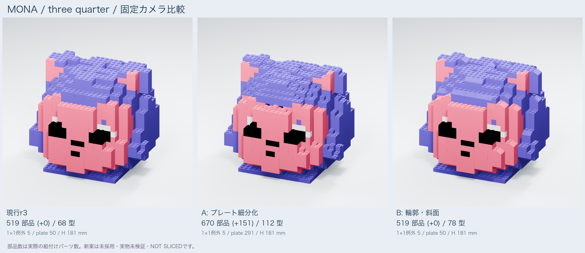
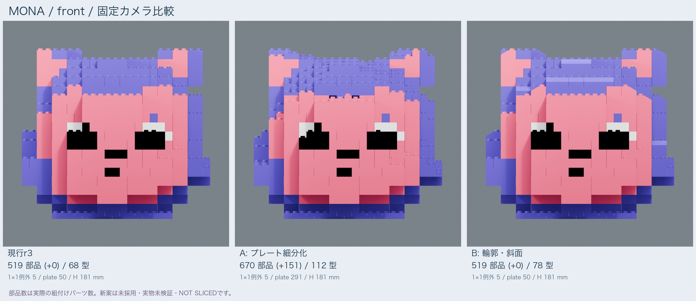
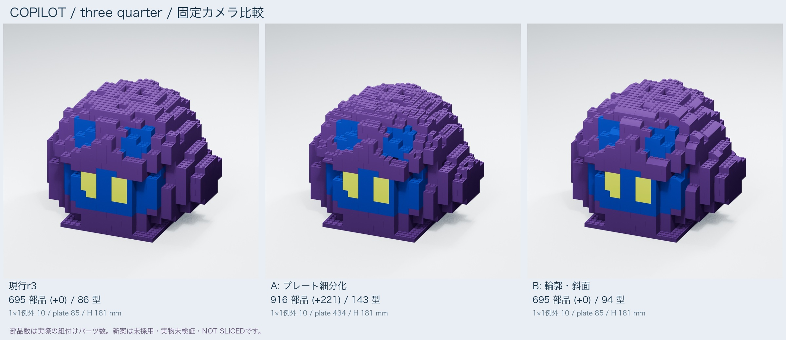
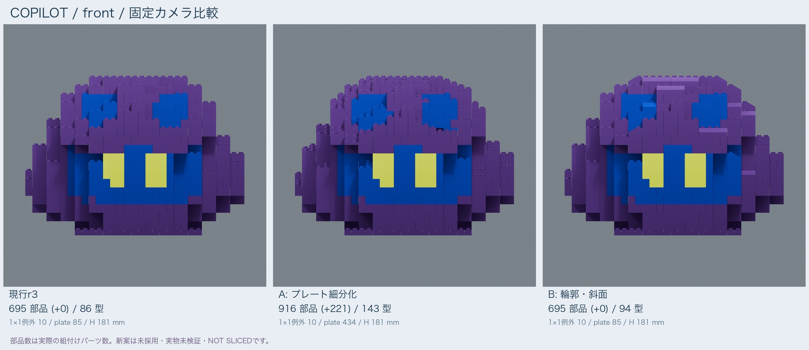
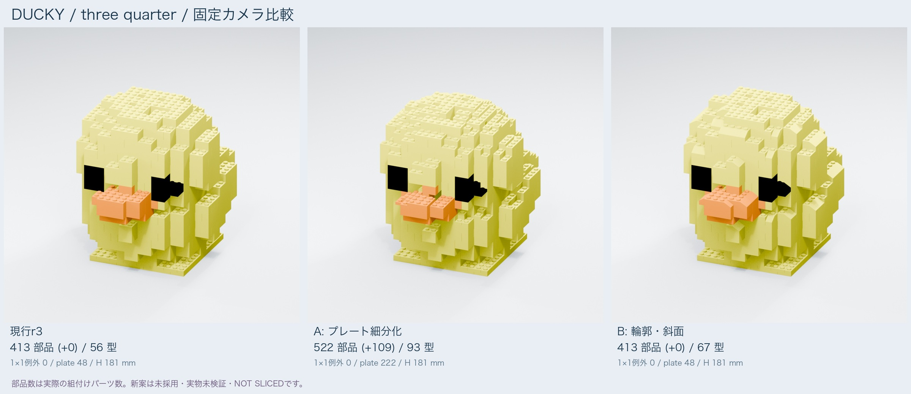
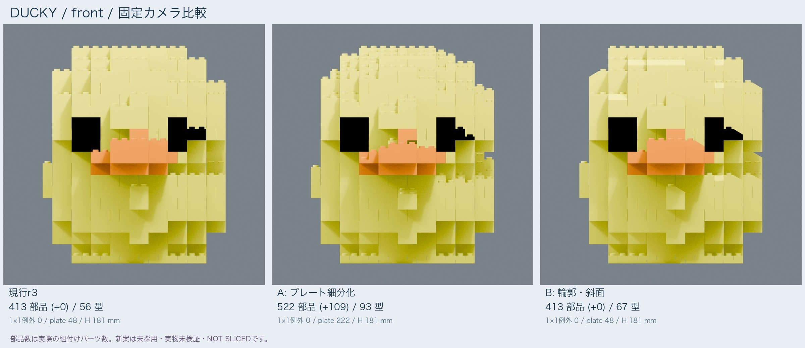

UNSELECTED STUDY · NOT PHYSICALLY TESTED · NOT SLICED · current r3 unchanged
Actual metrics / camera conditions JSON · CSV · 日本語
Actual assembly instances including internal support/foundation; excludes fixtures, trials and stage. Not type/STL/vertex/color counts.
The minimum short/long XY dimensions and body height are separate minima, not necessarily one physical part's XYZ dimensions.
This compares geometry and quantity; it does not declare either option aesthetically or physically superior. The 8 mm XY grid and coarse eye/mouth details remain.


| Option | Actual pieces | Δ | Types | 1×1 |
|---|---|---|---|---|
| Current r3 | 519 | +0 | 68 | 5 |
| A: Surface plates | 670 | +151 | 112 | 5 |
| B: Contour slopes | 519 | +0 | 78 | 5 |


| Option | Actual pieces | Δ | Types | 1×1 |
|---|---|---|---|---|
| Current r3 | 695 | +0 | 86 | 10 |
| A: Surface plates | 916 | +221 | 143 | 10 |
| B: Contour slopes | 695 | +0 | 94 | 10 |


| Option | Actual pieces | Δ | Types | 1×1 |
|---|---|---|---|---|
| Current r3 | 413 | +0 | 56 | 0 |
| A: Surface plates | 522 | +109 | 93 | 0 |
| B: Contour slopes | 413 | +0 | 67 | 0 |
Current r3: grippable construction mainly using 9.6 mm bricks. Baseline geometry and count are unchanged.
Reference only; physical fit, retention and handling have not been approved.
A: use 3.2 mm plates only where the original surface contour changes within a brick course. Retain grippable backing and upper mating sites; reuse large internal bricks.
Smaller steps cost more pieces and stacking steps. Thin-plate handling and strength remain untested. No new 1x1 chips are introduced.
B: replace 36 exposed-row blocks per character with actual sloped single-solid parts. This is native geometry, not Blender smoothing; the bottom interface is retained.
One-for-one replacements keep the piece count, but require new types. The roof is thicker and the underside cavity shallower. Filament, slicing time and retention are unknown.
Current r2 is multipart data, not a validated one-piece print. A single-body version would require separate geometry preparation and slicing. This study does not create it.